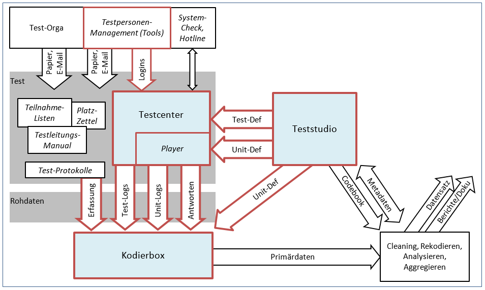

Daten und Prozesse

Daten-Input für das Testcenter
Um eine Studie mit dem Testcenter durchführen zu können, müssen Daten eingegeben werden. Diese Daten steuern den Zugriff auf die Studie (Logins), legen das Verhalten während der Durchführung fest und bestimmen Aufbau, Aufgabenreihenfolge und Aussehen der Studie (Test-Definition, Unit-Definition). Die einzugebenen Daten bestehen aus mehreren einzelnen Dateien in unterschiedlichen Dateiformaten. Die Gesamtheit all dieser Dateien wird auch häufig als Testdateien bezeichnet. Die Testdateien können während des Aufgabenentwurfs im IQB-Studio ausgegeben werden.
Wie diese Daten in das Testcenter geladen werden können, ist im Kapitel Daten Upload detailliert beschrieben.
Hier ist auch ein kleineres Video zu den Testdateien.
Welche Testdateien es gibt und welche Funktionen diese aufweisen, ist nachfolgend beschrieben.
Studien-Definition (Logins)
Die Zugangsdaten für die teilnehmenden Testpersonen und weitere wichtige Funktionen für den Testablauf werden in einer XML-Datei festgelegt. Diese XML-Datei zur Studien-Definition wird IQB-intern auch Testtaker-XML genannt. Prinzipiell ist der Dateiname aber frei wählbar. Diese Datei ist oben im Bild mit “Login” gekennzeichnet.
Welche Funktionen übernimmt die XML zur Studien-Definition?
- Festlegung Zugangsdaten/ Anmeldeverfahren:
Um eine Testdurchführung zu starten, müssen die teilnehmenden Personen zuvor mit entsprechenden Zugangsdaten angelegt werden. Die gespeicherten Antworten eines Testdurchlaufs werden dann zugeordnet zu diesen Zugansgdaten im System hinterlegt. Bei der Art der Anmeldung kann zwischen einer Vielzahl von Optionen gewählt werden. Die Anmeldung kann bspw. klassisch mittels und Passwort erfolgen, mittels Code oder via Link. Mehr Informationen zu den Anmeldeverfahren sind den Referenzen zu entnehmen! - Gruppierung von Zugansgdaten:
Die angelegten Testpersonen werden in Gruppen angelegt. Diese Gruppe können mit zeitlichen Beschränkungen versehen werden und mit einem Gruppenmonitor überwacht werden. Bei einer finalen Testdurchführung werden die gegebenen Antworten dann auch Gruppenabhängig gespeichert. - Testheftzuweisung: Aufgaben können in Testheften (Booklets) zusammengefasst werden. Jedem Login kann gezielt ein Testheft zugewiesen werden. Die Zuweisung mehrerer Testhefte ist möglich. Nach Anmeldung werden die zugeordneten Testhefte der Testperson präsentiert.
- Testablauf (bspw. heißer Test oder Review):
Um den Ablauf der Testung festzulegen, wird zu jedem Login ein Modus hinterlegt. Dieser Modus bestimmt wie die Testung für den jeweiligen Login durchgeführt wird (finaler Durchlauf oder nur Review). Jeder Modus verfügt über spezifische Eigenschaften, bspw. werden bei Wahl eines Modus zur finalen Testdurchführung alle Antworten zum Login gespeichert, während bei der Wahl eines Review-Modus die Antworten nicht gespeichert werden. Es sind auch spezielle Modi für die Testleitung vorgesehen. Die Testleitung wird dann in die Lage versetzt den Testverlauf steuern zu können. Detaillierte Informationen zu den Modi der Testdurchführung und deren Eigenschaften sind den Referenzen zu entnehmen! - individuelle Textersetzungen:
Einzelne Texte der Anwendung können individuell an die eigene Bedürfnisse angepasst werden. Bspw. können Texte von Dialogfenster und Warnungen angepasst werden.
Mehr Informationen zu der XML-Datei für die Studien-Defintion sind den Referenzen zu entnehmen.
Testheft-Definition (Test-Def)
Eine weitere XML-Datei übernimmt die Testheft-Definition. Sie trägt IQB-intern den Namen Booklet-XML. Auch hier kann der Dateiname frei gewählt werden. Diese Datei ist oben im Bild mit “Test-Def” gekennzeichnet.
Welche Funktionen übernimmt die XML zur Testheft-Definition?
- Aufgabenreihenfolge:
Die Reihenfolge der Aufgaben kann frei festgelegt werden. Der Aufruf erfolgt hierbei mittels eindeutiger ID der Aufgabe. Aufgaben werden auch oft Units genannt! - Aufgabensammlungen:
Aufgaben können Testlets zugewiesen werden oder in Testlets zusammengefasst werden. Ein Testlet wird häufig auch als Block bezeichnet! Für Testlets können Beschränkungen festgelegt werden, bspw. kann ein Testlet mit einem Zugangscode versehen werden oder es ist nur für eine bestimmte Zeit zugänglich. - Konfiguration:
Hinsichtlich Funktionalität und Layout der Testumgebung, können hier individuelle Festlegungen getroffen werden.
Mehr Informationen zu der XML-Datei für die Testheft-Defintion sind den Referenzen zu entnehmen.
Aufgaben-Definition (Unit-Def)
Die Aufgaben-Definition besteht aus zwei Dateien, die zueinander gehören. Eine XML mit Metadaten, wie bspw. ID und Label der Aufgabe. Diese wird IQB-intern allgemein auch als Unit-XML bezeichnet. Der Dateiname ist wieder frei wählbar und trägt typischerweise den eindeutigen Namen der Aufgabe. Eine weitere Datei enthält die Aufgabeninhalte in einem bestimmten Format mit der Endung .VOUD und wird auch als Ressource zu einer Aufgabe bezeichnet. IQB-intern wird diese Datei allgemein auch als Unit-VOUD bezeichnet. Der Name dieser Datei ist wieder frei wählbar , sollte aber günstigerweise den gleichen Namen wie die XML tragen, um die Zugehörigkeit schnell erkennen zu können. Im oberen Bild werden diese beide Dateien zusammen als Unit-Def bezeichnet.
Unit-XML
Welche Funktionen übernimmt XML zur Aufgaben-Definition?
- Metadaten:
Die Metadaten zu einer Unit. Hierzu gehören eine eindeutige ID der Aufgabe, ein Label und eine Beschreibung. - Angaben zur Aufgabenerstellung und Aufgabenwiedergabe:
Angabe des zur Aufgabenerstellung verwendeten Editors und gewünschten Players zur Aufgabenwiedergabe. Deklaration der zugehörigen Aufgabenressource (Unit-VOUD). - Angaben zur Aufgabenkodierung:
An dieser Stelle wird die Version des verwendeten Schemers zur Aufgabenkodierung angegeben. Im Weiteren sind hier alle Variablen bzgl. Aufgabenkodierung aufgeführt.
Mehr Informationen zur XML der Aufgaben-Definition sind auch den Referenzen zu entnehmen!
Unit-VOUD
Diese Datei enthält die eigentlichen Aufgabenelemente, wie bspw. Grafiken, Multiple Choice usw.. Sie wird oft auch als Ressource zu einer Augabe bezeichnet. Aufgrund ihres spezielles Formats ist sie nur schlecht manuell veränderbar. Änderungen sollten über einen geeigneten Editor erfolgen. Das IQB-Studio bietet einen solchen Editor an.
Bei bestimmten Aufgabenelementen, wie bspw. kurzen Textpassagen in einleitenden Aufgaben, wird eventuell keine Unit-VOUD erzeugt. Das Textelement befindet sich dann direkt in der Unit-XML und kann auch dort verändert werden.
Geo-Gebra
Werden in Aufgaben GeoGebra-Elemente eingesetzt, muss eine entsprechende Ressource mit der Endung .ITCR mit zur Aufgabe in das Testcenter geladen werden. Das GeoGebra-Paket kann unter https://download.geogebra.org/package/geogebra-math-apps-bundle heruntergeladen werden. Die heruntergeladene Datei muss dann in GeoGebra.itcr.zip umbenannt werden und in den Arbeitsbereich geladen werden, in dem sich auch die Aufgaben-Definitionen mit den GeoGebra-Elementen befinden.
Das Paket kann nicht mitausgeliefert werden, da GeoGebra diese Lizenz verwendet.
Mehr Informationen zu GeoGebra sind auch den Referenzen zu entnehmen!
Kodiervariablen und Kodierregeln
Zu jeder Aufgabe kann im IQB-Studio ein entsprechendes Kodierschema angelegt werden. Bei Ausgabe der Aufgabe erzeugt das Studio eine Datei mit der Endung .VOCS. In dieser Datei sind die erstellten Kodierregeln enthalten. In Verbindung mit den Kodiervariablen in der XML zur Aufgaben-Defintion (Unit-XML) kann das Testcenter Bedingungen für Aufgaben-Verzweigungen (adaptives Testen) schaffen.
Weitere Informationen zum Kodierschema sind den Referenzen zu entnehmen.
Player
In der Grafik ist dargestellt, dass das Testcenter intern eine Komponente “Player” enthält. Grundidee dieser Teilung ist, dass das interne Format einer Aufgaben-Definition, insbesondere der Aufgaben Ressource (Unit-VOUD), nicht direkt vom Testcenter selbst verarbeitet wird, sondern von einem Plug-In, welches je nach Aufgaben-Datentyp hinzugeladen wird. Durch diese Technik wird eine hohe Flexibilität erreicht: Änderungen der Aufgabenbezogenen Programmierung führen nicht zu einem neuen Testcenter, sondern nur der Plug-In-Code des Players wird ausgetauscht. Der Player ist somit eine eigenständige Programmierung, die die jeweilige Aufgaben-Definition lesen und darstellen kann. Der Player übernimmt weitere Aufgaben (responses complete, presentation complete usw.).
Für die Vorbereitung eines Tests bedeutet dies:
- jede Aufgaben-Definition einen Verweis auf das Datenformat und damit auf den erforderlichen Player enthalten muss und
- alle Player, die von Aufgaben benötigt werden, müssen vorab als Ressource (.HTML) in das Testcenter geladen werden
Der Player wird in der XML (Unit-XML) zur Aufgaben-Definition eingebunden. Die aktuellen Versionen des jeweiligen Players sind in den entsprechenden GitHub-Repositories veröffentlicht und können dort heruntergeladen werden. Der in der XML zur Aufgaben-Definition festgelegte Player, muss dann mit in das Testcenter geladen werden. Zumeist handelt es sich um HTML-Dateien mit dem Namen des Players.
Das IQB hat verschiedene Player für unterschiedliche Aufgaben-Formate programmiert. Alle Player sind bei GitHub veröffentlicht. Eine Übersicht ist zu finden auf der IQB-GitHub-Startseite
Daten-Output des Testcenters
Das Testcenter stellt Daten zur Verfügung, die für die Auswertung einer Studie wichtig sind. Nachfolgende Daten können nach Studienende aus dem Testcenter heruntergeladen werden.
Wie und welche Daten aus dem Testcenter geladen werden können, ist im Kapitel Daten Download und Auwertung detailliert beschrieben.
Logs
Ereignisse innerhalb einer Aufgabe und auch insgesamt innerhalb eines Tests, werden in ein Protokoll geschrieben. Dieses sogenannte “Logging” kann reduziert und auch ganz abgestellt werden, um die Datenmenge zu reduzieren. Welche Ereignisse genau gespeichert werden, ist auch vom Player abhängig. Folgende Erkenntnisse lassen sich beispielsweise aus den Log-Daten ablesen: * Version des Betriebssystems und des Browsers * Verweildauer auf einer Seite * Zeitpunkt des Beendens der Beantwortung
Antworten
Als Antworten werden Zustandsänderungen der Eingabe-Elemente der Aufgaben verstanden. Wenn die Testperson ein Ankreuzkästchen wählt, eine Linie mit der Maus verschiebt oder mehrere Sätze in ein Eingabefeld schreibt - all diese Eingaben werden mit dem jeweils letzten Stand gespeichert.
Kommentare
Wenn ein Test im Review-Modus durchgeführt wird, können zu Aufgaben oder zum gesamten Test Kommentare gegeben werden. Diese Kommentare können aus dem Testcenter geladen werden und können bspw. den Aufgabenentwickler*innen wichtige Hinweise zur Optimierung der jeweiligen Aufgabe geben, bevor diese final in einer Studie zur Anwendung kommt.
System-Check Berichte
Nach der Durchführung eines System-Checks werden bei Bedarf die Daten in der Datenbank gespeichert und sind ebenfalls abrufbar.
System-Check
Vor Studiedurchführung kann geprüft werden, ob die vorhandene Hardware und die Internetanbindung für die Durchführung ausreichend sind. Es können über den System-Check auch Befragung erzeugt werden, die die Studienverantwortlichen sensibilisieren, bestimmte Faktoren, die der Stabilität einer Studiendurchführung dienen, zu beachten. Hier genannt sei als Beispiel das Abfrage von Browserversionen und der Verweis auf unterstütze Versionen.
Die Konfigurationen des System-Checks erfolgt in einer XML-Datei. Der Dateiname ist frei wählbar.
Detaillierte Informationen zum System-Check sind dem gleichnamigen Kapitel zu entnehmen.
Daten-Bearbeitung
Die Testdateien für das Testcenter können manuell bearbeitet werden bevor sie in das Testcenter geladen werden. Hierfür ist ein Verständnis der Extensible Markup Language XML notwendig. Eine knappe Einleitung bietet hier der Punkt: Mehr zu XML in den Referenzen. Detaillierte Informationen dazu sind aber auch im Internet zu finden.
Der Daten-Output des Testcenters kann mit Hilfe eines weiteren IQB-Tools mit dem Namen: itc-Toolbox aufbereitet werden. Da es sich bei dem Daten-Output um CSV-Dateien handelt, kann es im Sinne der Übersichtlichkeit bspw. sinnvoll sein einzelne CSV-Dateien in Excel-Dateien zu wandeln. Mehr zur itc-Toolbox ist auf GitHub zu finden.